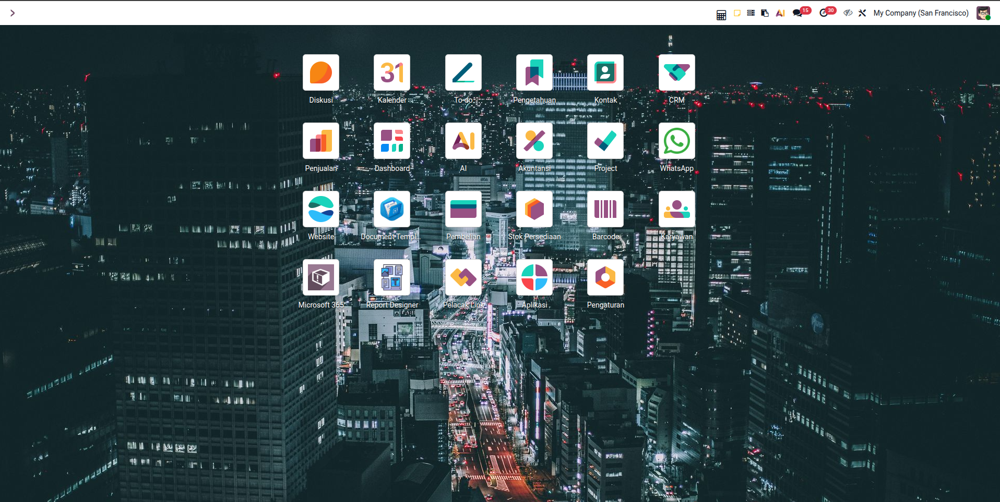
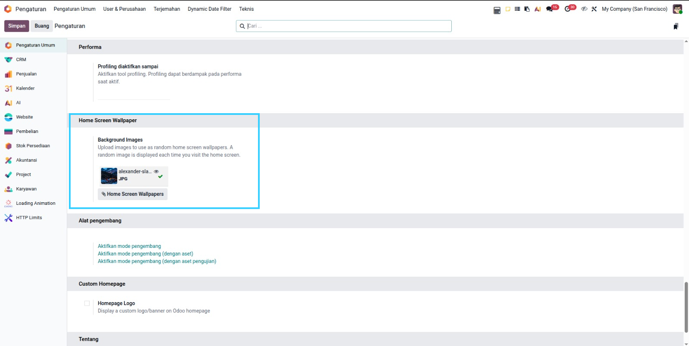
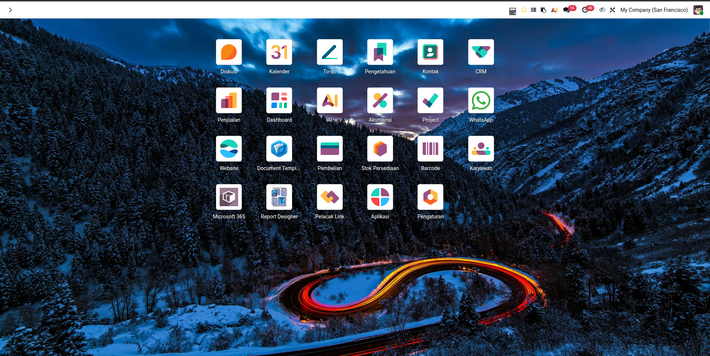

Upload multiple images and a random one is displayed as the home screen background each time you visit. Keep your Odoo experience fresh and visually appealing.

Go to Settings → General Settings → Home Screen Wallpaper and upload your images. Supports JPG, PNG, WebP and any image format. Drag & drop multiple files at once.

Wallpapers are displayed as full-screen cover images behind the app grid. Perfectly scaled to any screen size — desktop, tablet, or mobile.

4 Lightweight & No Extra DependenciesNo external libraries, no pip packages, no system dependencies. Just pure Odoo — install and enjoy. Works seamlessly with both Community and Enterprise editions. |
CSS VariablesUses Odoo’s native |
Stored in AttachmentsImages are stored as Odoo attachments. Manage them directly from Settings — add, remove, or replace anytime. |
Safe & ReversibleUninstall the module and the default home screen is fully restored. No permanent changes to core files. |
We provide free bug fixes and updates for all our modules. If you need help, please submit a support request through the Odoo Apps support page. Our team is always ready to assist you.